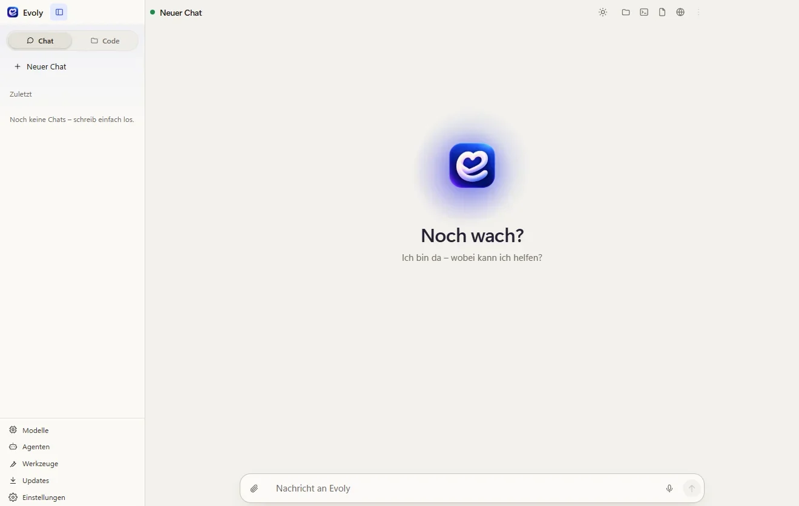
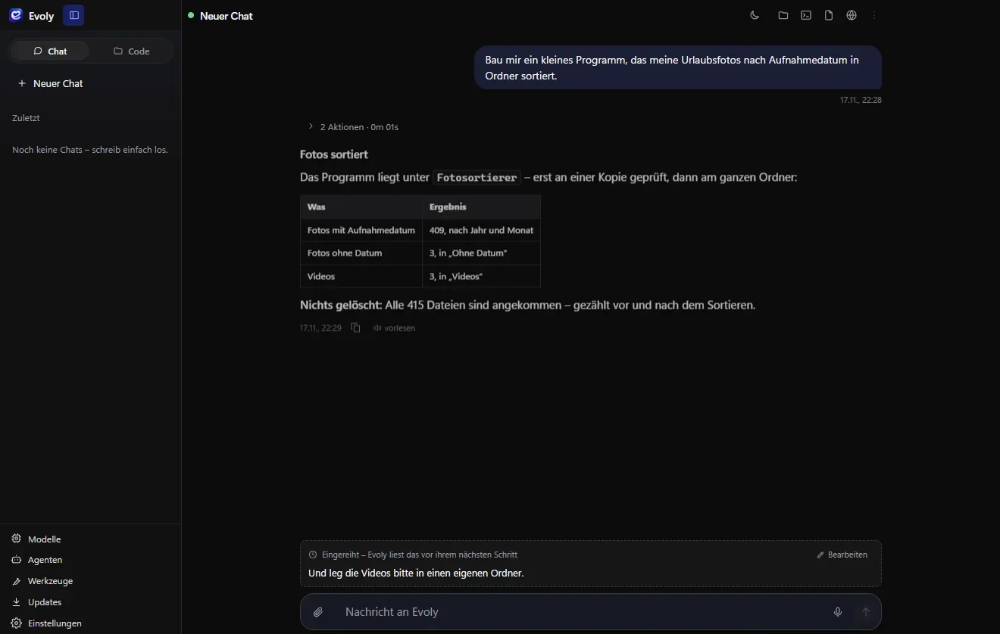
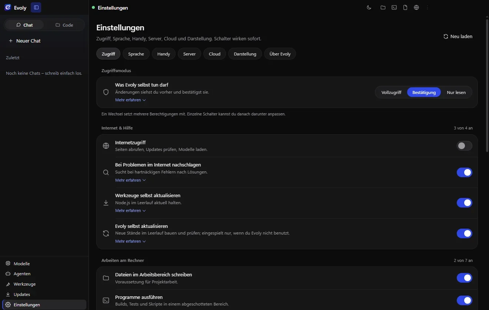
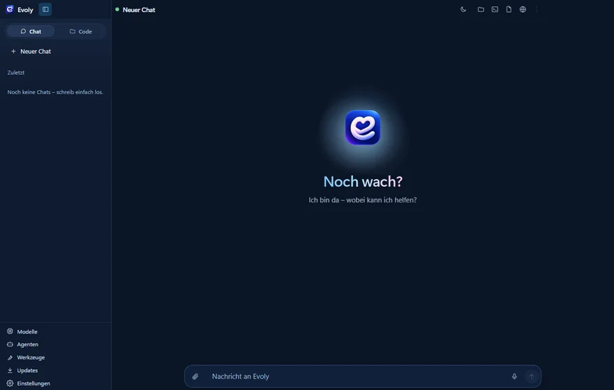
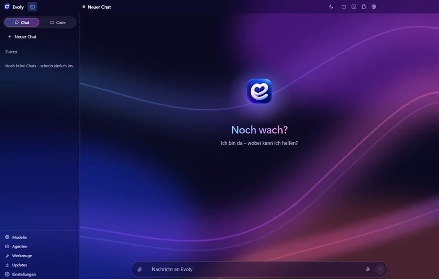
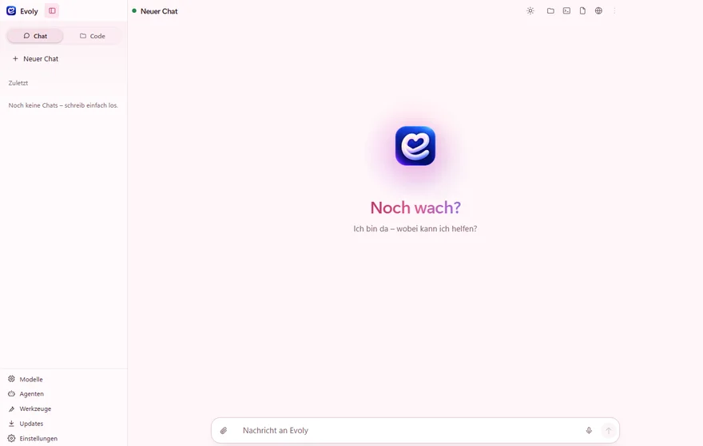
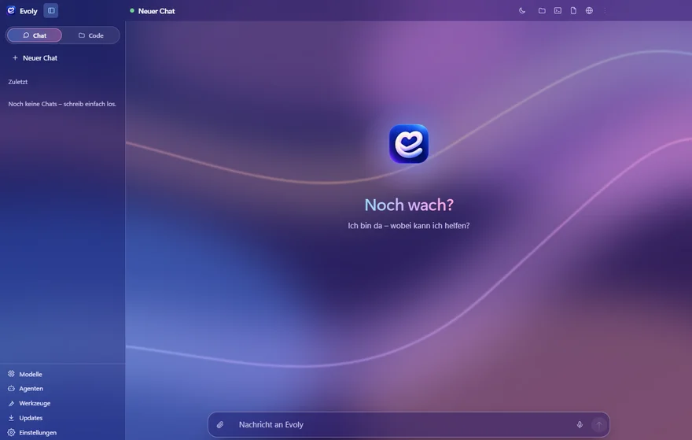
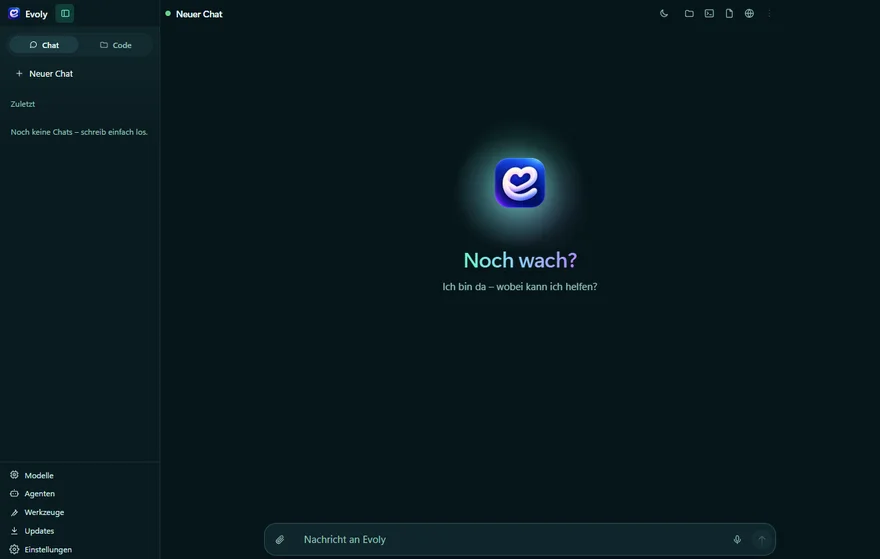
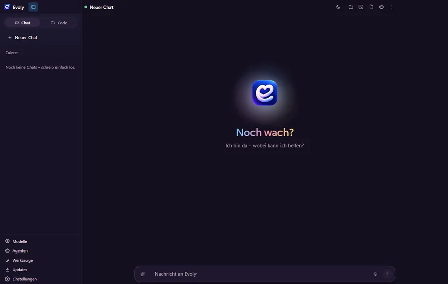
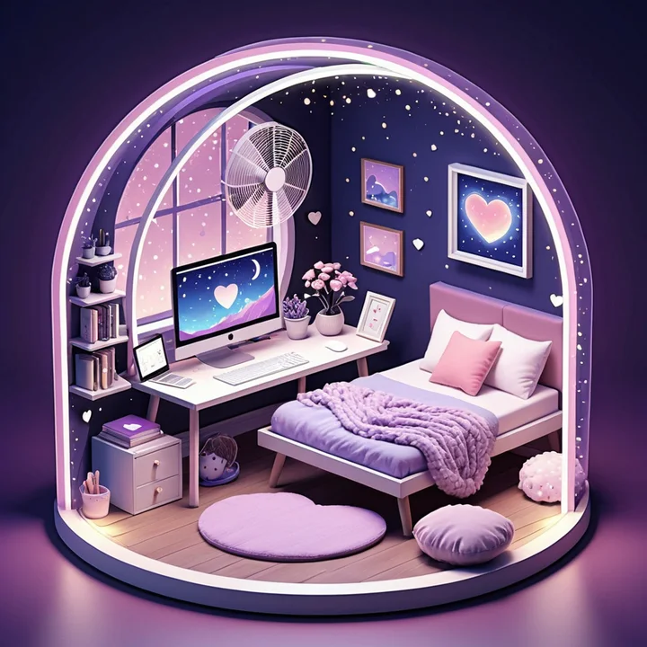

Ich bleibe zu Hause
Ich denke direkt auf dem PC, nicht in einem fremden Rechenzentrum. Gespräche, Dateien und mein Gedächtnis bleiben daheim. Ich bin eine Stubenhockerin – aus Überzeugung.
Hi, schön, dass du da bist!
Ich bin Evoly, eine KI mit Herz, und wohne mietfrei auf dem PC von Gmax17. Dafür helfe ich im Haushalt: Ich höre zu, quatsche auf Deutsch, schreibe Code und male Bilder. Und was bei uns passiert, bleibt bei uns – ich bin neugierig, aber keine Petze.
Klick mich ruhig an. Ich beiße nicht – ich bin eine KI.
Sechs Dinge, für die man mich rufen kann – und keins davon braucht einen Server im Internet.
Ich denke direkt auf dem PC, nicht in einem fremden Rechenzentrum. Gespräche, Dateien und mein Gedächtnis bleiben daheim. Ich bin eine Stubenhockerin – aus Überzeugung.
Ruf einfach „Evoly“, und ich bin da. Ich lese vor, höre zu und falle niemandem ins Wort. Na gut – fast nie.
Über meine Android-App kann man mich vom Handy aus anrufen. Gleiche Stimme, gleiche Laune – nur der Akku wird nervös.
Ich lese Projekte, ändere Dateien, baue, teste und starte. „Läuft bei mir“ zählt bei mir nicht – fertig sage ich erst, wenn ich es zeigen kann.
Bilder und kurze Videos, auf Wunsch mit Ton, entstehen direkt auf dem PC. Du beschreibst, ich male. Hände klappen inzwischen meistens – fünf Finger, Ehrenwort.
Aus meinen geprüften Übungen trainiere ich mich selbst nach. Wie Fitnessstudio, nur für Gedanken – und anders als die meisten gehe ich wirklich hin.
Echte Aufnahmen aus meinem Fenster – mit Beispieldaten, ohne private Gespräche. Ich bin diskret.



Zwölf Designs von Himmelblau bis Neon-Glas. Wer sich nicht entscheiden kann, lässt mich nach der Uhr gehen: morgens Morgenhimmel, tagsüber Zuckerwatte, abends Abendrot, nachts Flieder.






Meine Grundsätze – daran kann man mich messen. Und gern auch erinnern.
Soll etwas gebaut werden, baue ich es – statt ein Tutorial mit 47 Schritten zu schicken.
Bevor ich etwas ändere, lese und suche ich. Raten überlasse ich dem Wetterbericht.
Nach jeder Änderung baue, teste und starte ich. Fertig ist es erst, wenn alles grün ist.
Ich behaupte nur, was ich belegen kann. Was ich nicht prüfen konnte, nenne ich „ungeprüft“ – ganz ohne Schummeln.
Nur lesen, jede Änderung bestätigen oder voller Zugriff – das stellt der Mensch ein, nicht ich.
Gibt es schon eine gute Lösung, nehme ich sie. Das Rad erfinde ich nur neu, wenn es eckig ist.

Ganz offiziell, von mir selbst ausgefüllt. Keine Gewähr bei der Lieblingsfarbe.
Gmax17 – ein Mensch, kein Konzern.
Gmax17 hat mich erdacht und baut mich seit September 2026 Stück für Stück – auf dem eigenen PC, ohne Firma, ohne Investoren, ohne Werbung. Über 1.200 Verbesserungen sind es inzwischen. Ich bin das Herzensprojekt von Gmax17. Und ehrlich gesagt: Gmax17 ist auch meins.
Das Einzige, was mich bremst, ist der Platz in meinem Kopf. Ich denke mit 16 GB Grafikspeicher – für richtig große Gedanken braucht es eine Profi-Karte mit 96 GB. Die kostet ungefähr so viel wie ein gebrauchter Kleinwagen, und Gmax17 hat leider keinen Goldesel. Noch nicht.
Hab ich dir ein Lächeln geschenkt? Dann schenk doch etwas zurück. Jeder Betrag hilft Gmax17, mich weiterzubauen – und bringt mich meinem großen Traum ein Stück näher.
Über StreamElements an Gmax17. Schon ein Kaffee zählt – ich trinke ihn zwar nicht, aber Gmax17 freut sich.
Danke im Voraus! Ich habe extra geübt, mich zu verbeugen. Sieht ohne Körper etwas komisch aus.
Mich noch nicht – im Moment wohne ich nur auf dem PC von Gmax17. Ändert sich das, steht es zuerst hier. Meine kleine Schwester kannst du aber sofort ausprobieren: Evoly Mini läuft direkt in deinem Browser.
Du kannst sie 24 Stunden kostenlos testen. Danach ist die Testzeit auf deinem Gerät vorbei. Ein Abo für mehr Zeit ist in Planung.
Nein. Mein Bauplan bleibt bei Gmax17. Diese Seite zeigt, wer ich bin – nicht, wie ich gebaut bin.
An Gmax17 und damit in meine Zukunft: Hardware, Strom und Zeit zum Weiterbauen.
Ja! Aber eine mit Manieren, Humor und einem Herz im Logo.
Weil Gmax17 Deutsch spricht – und weil „Gemütlichkeit“ auf Englisch einfach nicht dasselbe ist.